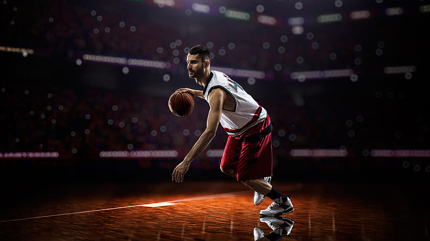

- SPORTIVE WORLD
Basketball was invented in 1891 by a Canadian physical education instructor named James Naismith. It was initially intended as an indoor game that could be played during the winter months. The first official game of basketball was played on December 21, 1891, at the International YMCA Training School in Springfied, Massachusetts. The game quickly grew in popularity and was adopted by colleges and universities across the United States. In 1932, basketball became an Olympic sport, and in 1949, the National Basketball Association (NBA) was formed. Today, basketball is played at all levels, from amateur to professional, and is enjoyed by millions of people around the world. ld

For more details watch this vedio:- The History of Basketball
Basketball is a popular team sport that originated in the United States in the late 19th century. The game is played between two teams, each with five players on the court at a time, with the objective of shooting a ball through a hoop elevated 10 feet above the ground.
Basketball is played on a rectangular court with baskets at each end. Each team tries to score points by shooting the ball through the opponent's basket while preventing the other team from scoring in their own basket. The game is divided into four quarters, each lasting 12 minutes at the professional level, with the team that scores the most points at the end of the game declared the winner.
Basketball has become a global sport with professional leagues and competitions held in countries around the world. The National Basketball Association (NBA) in the United States is one of the most popular and well-known professional basketball leagues,featuring some of the best players in the world. Basketball is also played at the amateur and collegiate levels, with millions of people participating in the sport at all levels of competition.
A basketball team typically consists of 12 players, although only 5 players from each team are allowed on the court at any one time during a game. The other players on the team are typically substitutes who can be brought into the game to replace tired or injured players, or to provide a different skillset. The five players on the court during a game typically include a point guard, a shooting guard, a small forward, a power forward, and a center. Each player has different responsibilities and skillsets, with the point guard typically responsible for bringing the ball up the court and initiating offensive plays, and the center responsible for rebounding and protecting the rim on defense. Basketball is a fast-paced and physically demanding sport that requires strong teamwork, coordination, and communication among players. Successful teams are often those that can work together effectively, with each player contributing their unique strengths to achieve a common goal.
A basketball court is a rectangular playing surface specifically designed for the game of basketball. It typically measures 94 feet in length and 50 feet in width, although the dimensions can vary in different leagues and levels of play. The court is divided into two halves by a midcourt line, with a hoop and backboard located at each end. The hoop is positioned 10 feet above the ground, and a three-point arc extends from beyond the free-throw line to determine the distance for three-point shots. The court is typically made of hardwood, providing a smooth and durable surface for players to compete on.


For more details watch this vedio:- An Introduction for Beginners
For more details watch this vedio:- The Rules of Basketball
Shooting is the final movemet to complete the offensive action in order to score a basket.
Dribbling is the way of progress with the ball of an individual to get free from his opponent or to get a proper position in passing or shooting.
Passing the ball is the most quickest and most effective way to get the ball from player to player.
For more details watch this vedio:- BASIC SKILLS ON BASKETBALL
The NBA, or National Basketball Association, is a professional basketball league comprising 30 teams in North America. Established in 1946, it has grown into one of the most popular and influential sports leagues worldwide. The NBA showcases exceptional basketball talent, featuring top athletes from around the globe. The league's regular season runs from October to April, followed by the playoffs culminating in the NBA Finals. It has produced legendary players like Michael Jordan, LeBron James, and Kobe Bryant, captivating fans with their incredible skills and memorable moments. With a rich history, passionate fanbase, and global reach, the NBA remains a premier destination for basketball enthusiasts.


.jpeg)
For more details watch this vedio:- NBA in 5 Minutes - Learn About NBA Quickly
There have been numerous world-famous basketball players who have left a lasting impact on the sport. Here are some of the most prominent ones:
These players represent just a small fraction of the many talented individuals who have played basketball at the highest level.


-End-